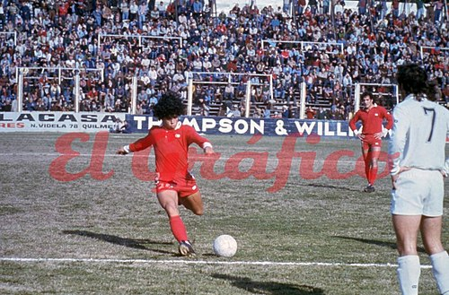
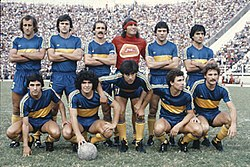
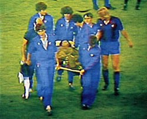
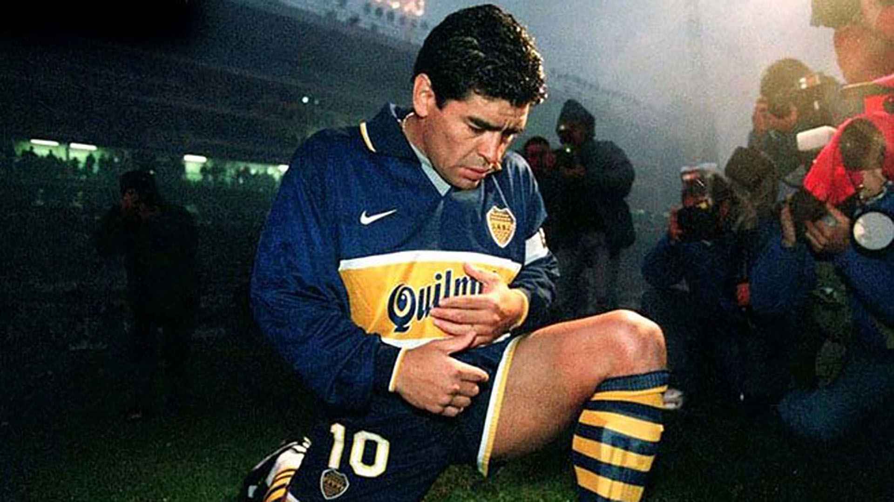

HISTORIAL DE CLUBES
Inicios en Argentinos Juniors (1976-1980)

El debut de Maradona en Argentinos Juniors generó gran expectativa en el club, aunque tuvo que retrasarse debido a una suspensión de cinco fechas por una expulsión en un partido de juveniles ante Vélez. Su primer partido oficial fue el 20 de octubre de 1976, a los 15 años, en un encuentro del Campeonato Nacional contra Talleres, uno de los mejores equipos del país en ese momento. Maradona ingresó en el segundo tiempo, realizó un caño a un jugador rival y entusiasmó a la hinchada local. Esa tarde expresó que "tocó el cielo con las manos" y recibió el respeto de los fanáticos, además de reseñas positivas en la prensa. En su siguiente partido, ante Newell's Old Boys, ingresó en la alineación titular, aunque con un resultado negativo para su equipo, que perdió 4-2. Poco después, el 14 de noviembre, marcó su primer gol en un partido contra San Lorenzo de Mar del Plata, y convirtió otro tanto en esa misma jornada, siendo sus únicos goles en ese año.
Consolidación y exclusión del Mundial 78

En 1977, Maradona se consolidó como titular en Argentinos Juniors, donde marcó 19 goles y anotó uno de los goles más recordados al eludir a toda la defensa desde la mitad de la cancha. Ese año, fue cercano a una transferencia al Sheffield United, pero no se concretó por decisiones del club inglés. Además, en la selección argentina, Menotti lo dejó fuera del Mundial 1978, aunque en 1979 fue la figura del torneo juvenil en Japón, donde fue galardonado y el equipo ganó su primer campeonato mundial juvenil.
Primer paso en Boca Juniors y único título en Argentina (1981)

En 1981, Maradona dejó Argentinos Juniors y rechazó ofertas de River y otros clubes para trasladarse a Boca, que atravesaba problemas económicos. Debutó en febrero, marcó dos goles en su primer partido y, tras jugar infiltrado por una lesión, logró su único título en Argentina en 1982 tras vencer a Racing en una final. En total, disputó 40 partidos y marcó 28 goles en Boca antes de concentrarse con la selección para el Mundial de España.
Paso por F.C Barcelona (1982-1984)

Maradona fichó por el Barcelona en 1982, donde hizo una buena primera temporada, pero la relación con el club y los árbitros se volvió tensa tras incidentes y suspensiones, además de un contacto inicial con las drogas. La tensión y las lesiones lo llevaron a abandonar Barcelona en 1984, tras jugar 58 partidos y marcar 38 goles, motivado también por problemas económicos y su malestar con las autoridades españolas.
Consagración en Napoli (1984-1990)

El resumen de la estancia de Diego Armando Maradona en Nápoles es que lideró al equipo del sur de Italia a la gloria, ganando cinco títulos entre 1984 y 1991: dos Scudettos (liga italiana), una Copa Italia, una Copa de la UEFA y una Supercopa de Italia. Su llegada transformó al club y le dio a la ciudad un sentido de orgullo y redención, convirtiéndolo en un ídolo inmortalizado por los napolitanos.
Sevilla (1992-1993)
En 1992, tras cumplir una suspensión de 15 meses, Maradona intentó dejar Italia y fichar por el Sevilla, que pagó una gran cifra para su traspaso. La operación se complicó con el Napoli, que rechazó la transferencia, y fue necesaria la intervención de la FIFA para avanzar. Finalmente, el entrenador Carlos Bilardo apoyó el fichaje, y Marino se incorporó al Sevilla tras obtener autorización judicial, estrenándose en un amistoso contra el Bayern Munich y debutando oficialmente en la liga en octubre de 1992, enfrentándose al Athletic Club. Marcó su primer gol en ese partido y ayudó a ganar. En ese período, Maradona enfrentó problemas con los directivos por sus salidas nocturnas y ausencias, lo que llevó a un seguimiento por parte de un detective y a jugar infiltrado por una lesión de rodilla. En junio de 1993, pidió salir por su lesión, pero Bilardo lo obligó a seguir jugando, generando una bronca que terminó en su retiro del Sevilla. Con el club, jugó 26 partidos en La Liga, marcó 5 goles y dio 9 asistencias, logrando el séptimo puesto en la temporada.
Regreso al fútbol argentino: Newell's Old Boys (1993-1994)
En 1993, Maradona regresó al fútbol argentino y fichó por Newell's Old Boys, tras una negociación que inicialmente apuntaba a su regreso a Argentinos Juniors, pero que fue frustrada por amenazas de barras bravas que exigían dinero. También estuvo cerca de fichar por San Lorenzo, pero la operación se cayó por problemas con el presidente del club. Su primer entrenamiento en Newell’s fue en septiembre, en medio de una gran convocatoria de aficionados, y poco después se realizó un amistoso de presentación contra Emelec de Ecuador. Su debut oficial fue en octubre, en un partido contra Independiente, que perdió 3-1, y en los partidos siguientes jugó contra varios equipos, pero en diciembre sufrió un desgarro muscular que lo mantuvo alejado varias semanas. La relación con el nuevo técnico, Jorge Castelli, fue complicada, ya que le impidieron algunas licencias que había pactado con el anterior entrenador. Por esa razón, su salida del club fue inevitable y jugó su último partido en un amistoso en enero de 1994, sin goles en cinco partidos oficiales. En febrero, protagonizó un hecho polémico al disparar con un rifle de aire comprimido a periodistas y fotógrafos en la puerta de su casa. Por este incidente, fue condenado a una suspensión de dos años en suspenso y a pagar una multa, además de ser considerado responsable por la agresión a los reporteros.
Retiro del fútbol en Boca Juniors (1995-1997)

En 1993, Maradona volvió a jugar en Argentina con Boca Juniors, tras una serie de negociaciones y problemas con la directiva, que incluyeron conflictos por su negativa a usar el uniforme y el gorro de la marca Nike y Adidas, respectivamente. Firmó en abril y debutó en julio contra Newell’s, marcando un gol en su primer partido oficial y participando en varios encuentros, aunque en agosto dio positivo en un control antidopaje por cocaína. La AFA le impuso una suspensión provisoria y tuvo que pasar por pruebas y amenazas, pero logró seguir compitiendo tras un proceso judicial y medidas de control estrictas. Su último partido fue en octubre de 1997, en un clásico contra River, tras lo cual anunció su retiro del fútbol profesional en su cumpleaños número 37. Durante ese período, enfrentó también lesiones y conflictos con la directiva, que marcaron su última etapa en el fútbol profesional.